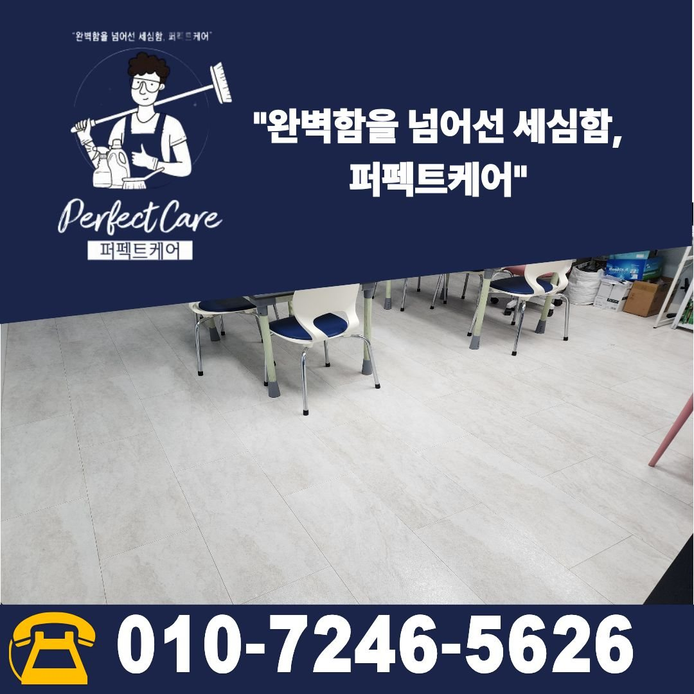
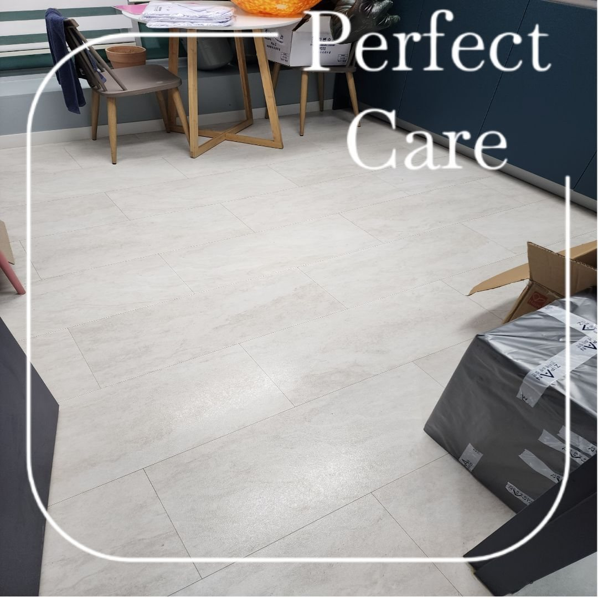
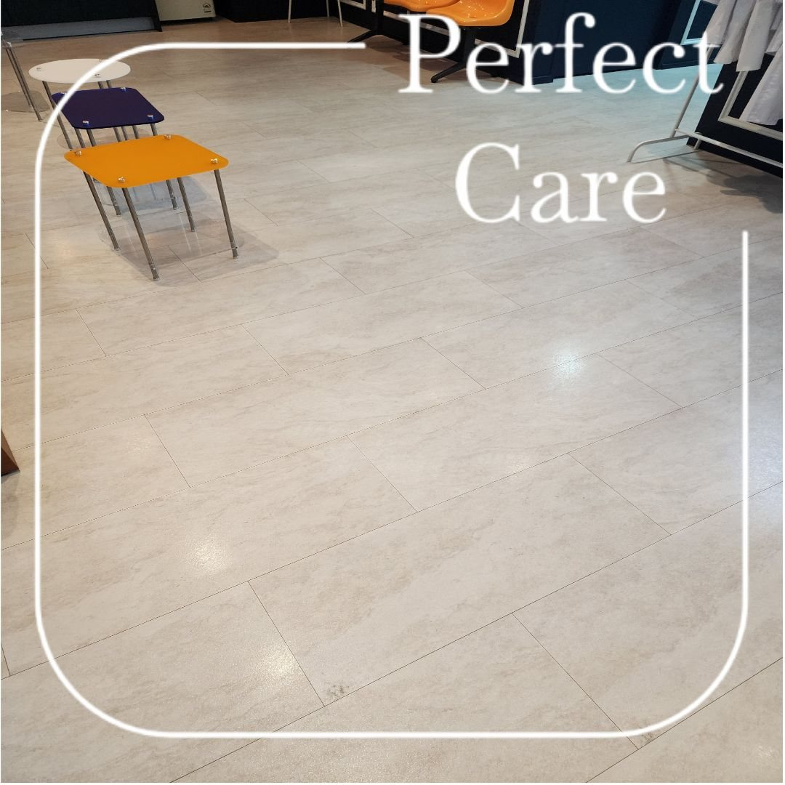
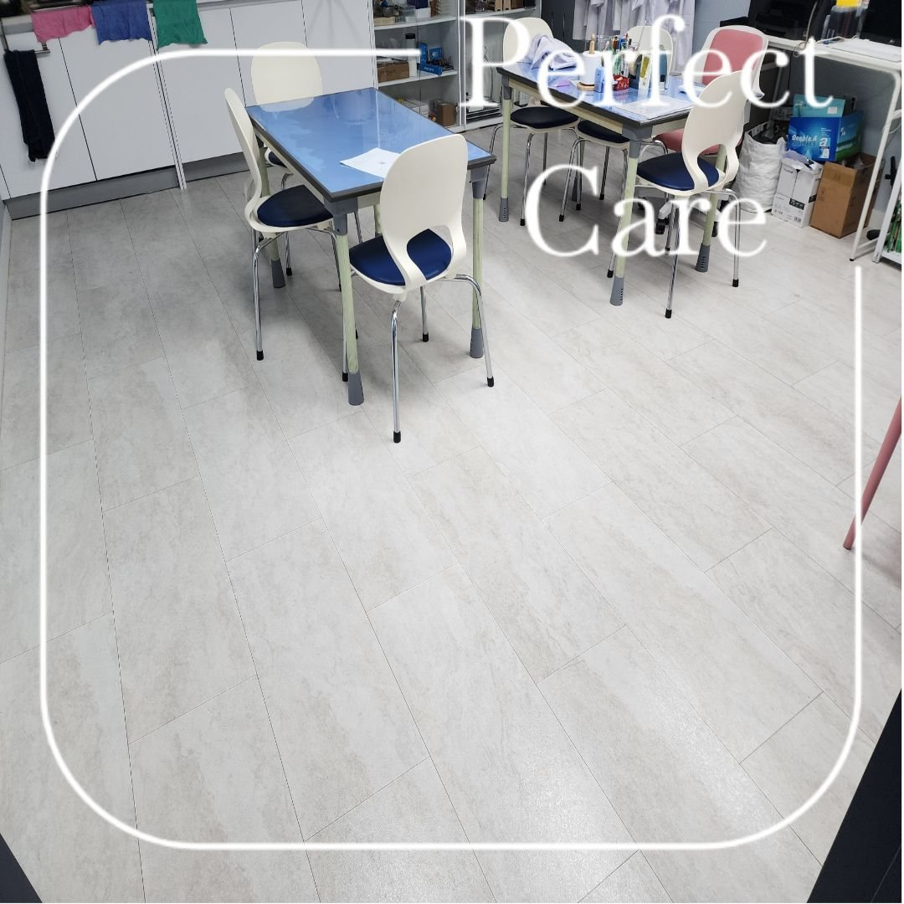
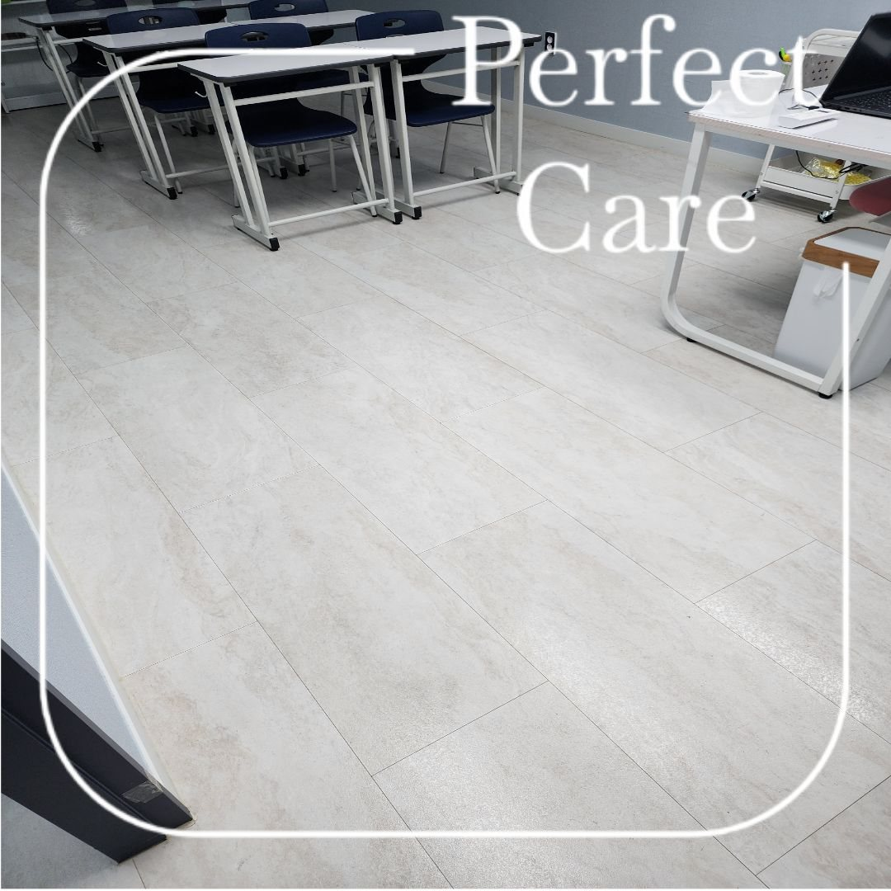
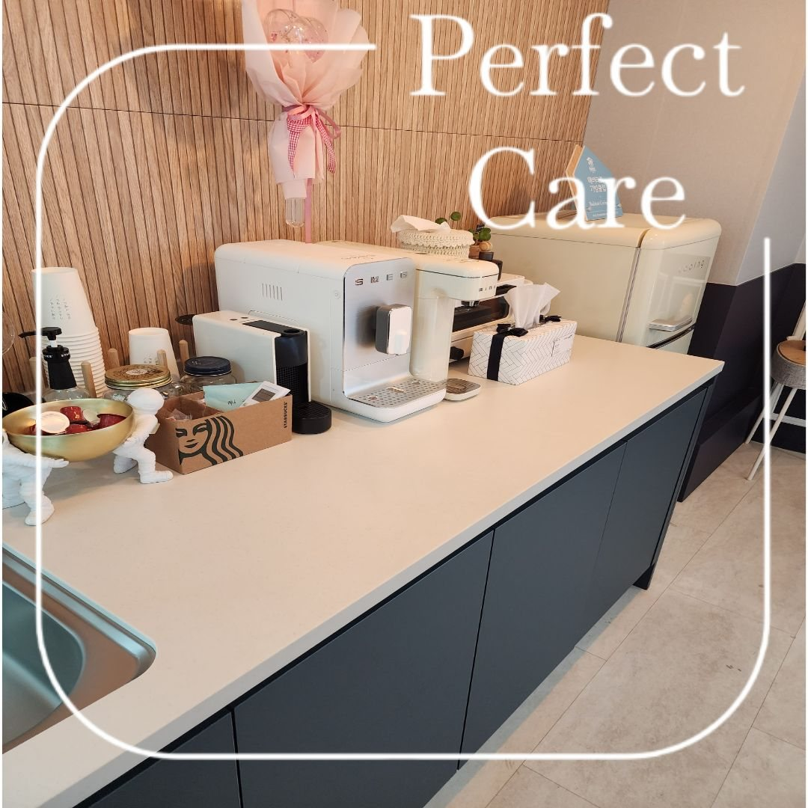
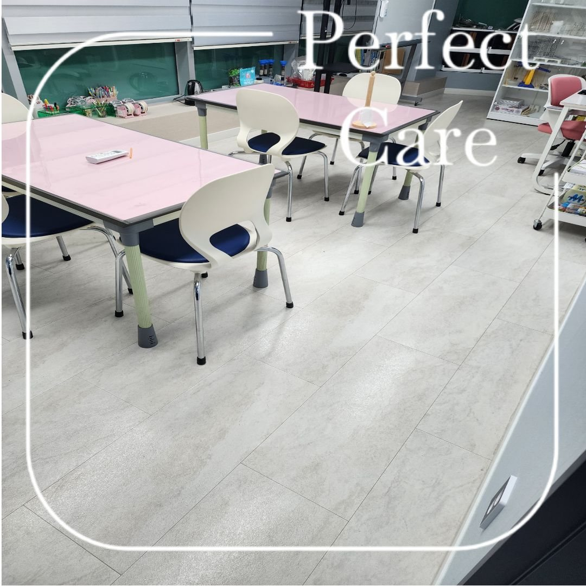
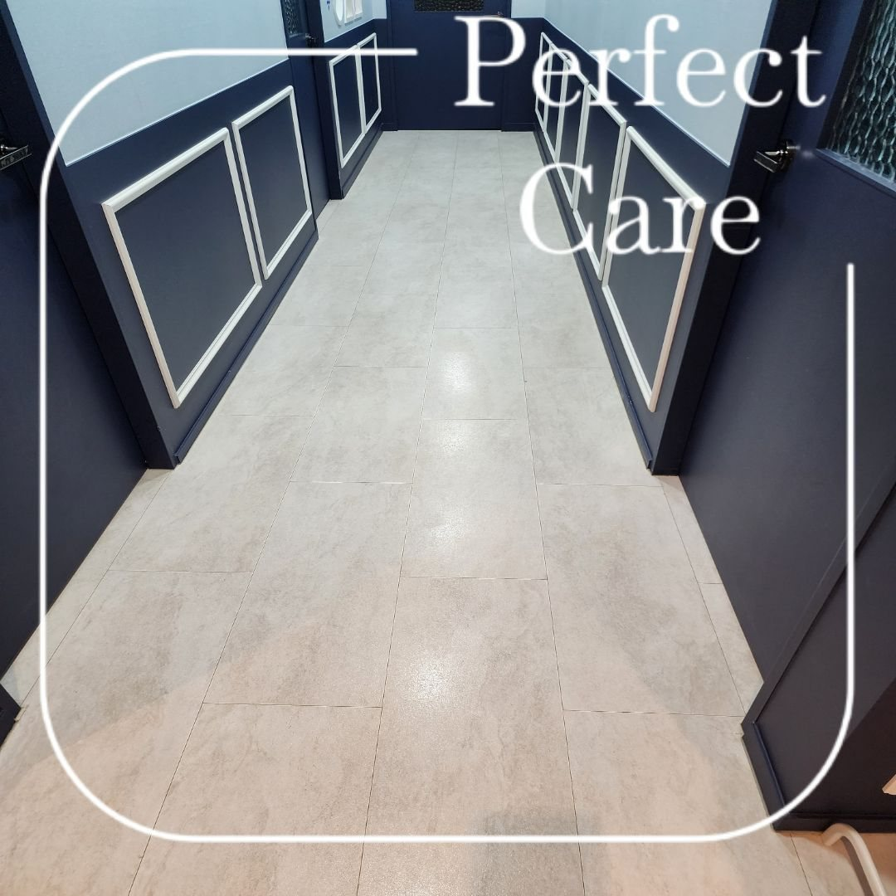
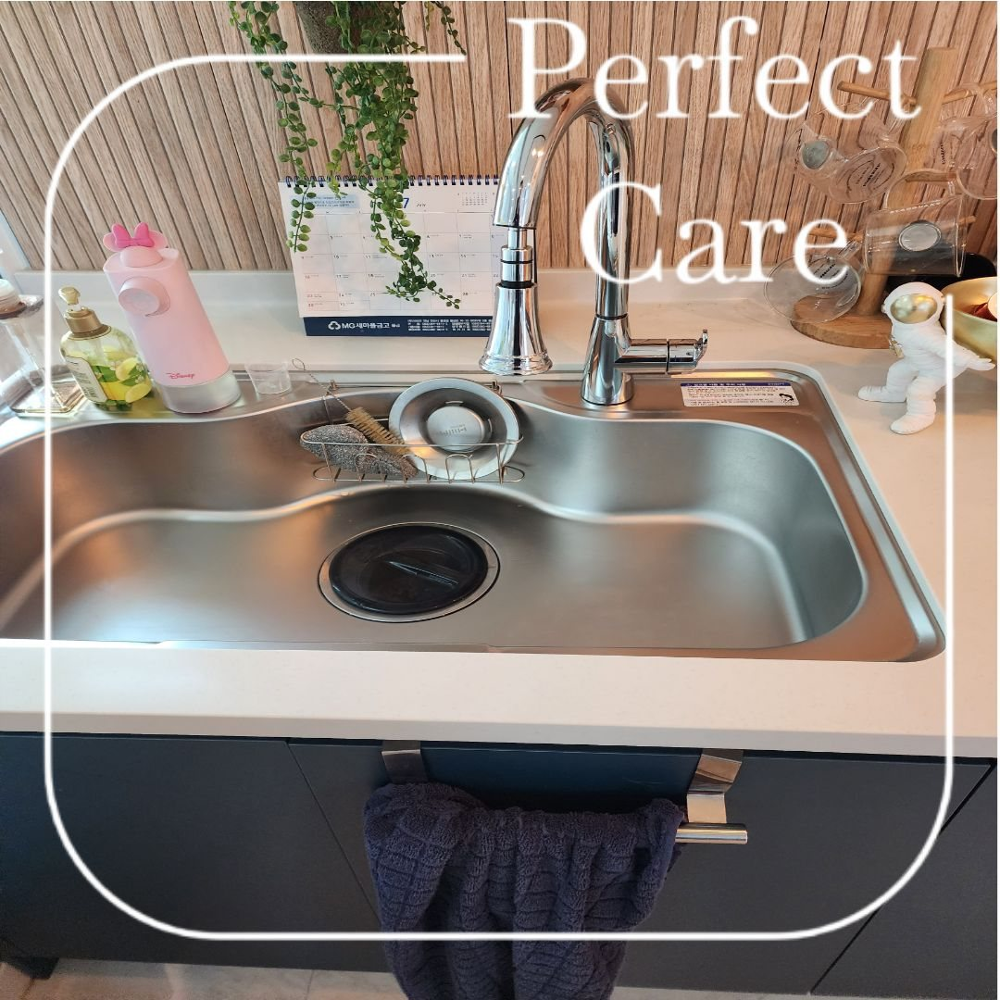

교실 바닥과 책상 주변부터 정리
교실은 책상과 의자가 많아 바닥 전체를 관리할 때 이동 동선과 가구 아래쪽을 함께 확인해야 합니다. 의자 다리 주변과 책상 아래, 출입구 쪽에 쌓이는 먼지와 생활오염을 정리하고 수업 공간이 깔끔하게 유지되도록 관리했습니다.

교실 바닥과 책상·의자 주변, 복도와 공용공간을 정기적으로 관리한 학원 청소 현장입니다. 학생과 강사가 매일 사용하는 공간인 만큼 눈에 잘 보이는 부분뿐 아니라 이동 동선과 바닥 상태까지 함께 확인했습니다.
교실은 책상과 의자가 많아 바닥 전체를 관리할 때 이동 동선과 가구 아래쪽을 함께 확인해야 합니다. 의자 다리 주변과 책상 아래, 출입구 쪽에 쌓이는 먼지와 생활오염을 정리하고 수업 공간이 깔끔하게 유지되도록 관리했습니다.

학원 청소는 교실 내부만 깨끗하게 해서는 전체적인 인상이 정돈되기 어렵습니다. 학생들이 오가는 복도와 출입구, 휴게공간과 공용구역까지 함께 관리해 공간 전체가 균일하게 깔끔해 보이도록 작업했습니다.








퍼펙트케어는 학원 규모, 교실 수, 학생 이용량, 운영시간, 바닥 오염 정도와 관리 범위를 확인해 정기청소 횟수를 상담합니다. 주 1회부터 주 6회까지 현장 조건에 맞춰 안내하며, 교실·복도·화장실·공용공간을 필요한 범위로 묶어 관리할 수 있습니다.